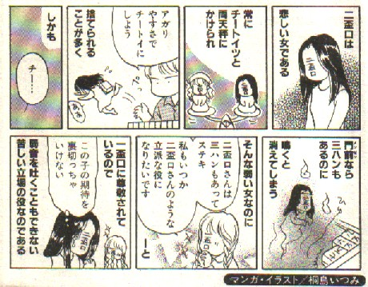

（２３）両般高
中国読みをすれば「リャンパンカオ」、普通、「リャンペーコー」と呼称されている。またダブルイーペーコーという呼称もかなり普及している。現代中国では大七対（ターチートイ＝七対子の兄貴）とか双般高（シャンパンカオ）と呼ばれる。しかし日本の両般高は、中国の大七対や双般高が日本に伝わってきたものではない。
両般高は、すでに普及していた一般高のバージョンアップ版として、日本で成立したものである。一般高二つ分というので当初は両翻扱いが普通であったが、難度がかなり高いというので、近年は三翻扱いがかなり普及している。
しかし三翻であっても、発生元が一般高なので、チーすると一般高同様、無翻とされることが多い。しかし近年は、他の順子系の役のように一翻下がりとするルールもある。
別名・大七対・両辺高・両色両順・両色同順・双般高
和字・両盃口・両平行・両並口・ダブル一般高
なお、この両般高からさらにバージョンアップされ、純般高（じゅんペーコー＝両般高同順）という役も誕生している。

